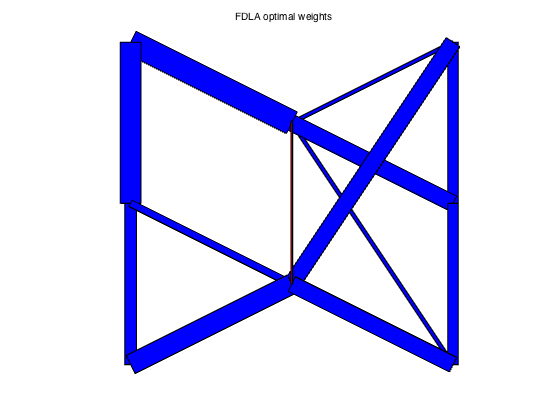
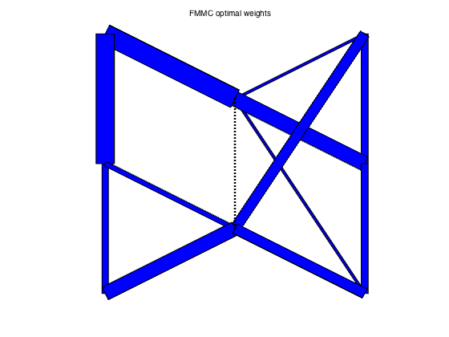
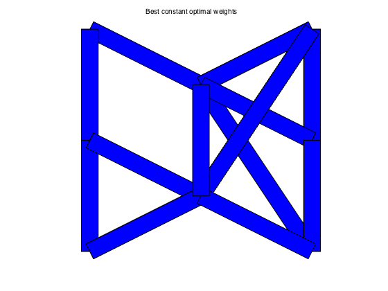
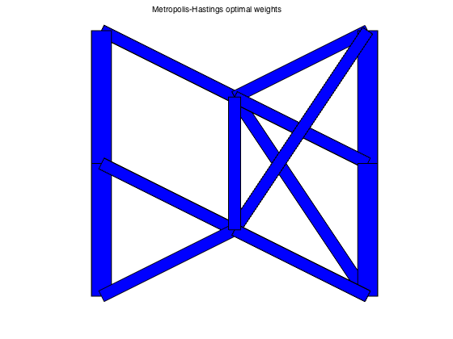

% S. Boyd, et. al., "Convex Optimization of Graph Laplacian Eigenvalues" % ICM'06 talk examples (www.stanford.edu/~boyd/cvx_opt_graph_lapl_eigs.html) % Written for CVX by Almir Mutapcic 08/29/06 % (figures are generated) % % In this example we consider a graph described by the incidence matrix A. % Each edge has a weight W_i, and we optimize various functions of the % edge weights as described in the referenced paper; in particular, % % - the fastest distributed linear averaging (FDLA) problem (fdla.m) % - the fastest mixing Markov chain (FMMC) problem (fmmc.m) % % Then we compare these solutions to the heuristics listed below: % % - maximum-degree heuristic (max_deg.m) % - constant weights that yield fastest averaging (best_const.m) % - Metropolis-Hastings heuristic (mh.m) % small example (incidence matrix A) A = [ 1 0 0 1 0 0 0 0 0 0 0 0 0; -1 1 0 0 1 1 0 0 0 0 0 0 1; 0 -1 1 0 0 0 0 0 -1 0 0 0 0; 0 0 -1 0 0 -1 0 0 0 -1 0 0 0; 0 0 0 -1 0 0 -1 1 0 0 0 0 0; 0 0 0 0 0 0 1 0 0 0 1 0 0; 0 0 0 0 0 0 0 -1 1 0 -1 1 -1; 0 0 0 0 -1 0 0 0 0 1 0 -1 0]; % x and y locations of the graph nodes xy = [ 1 2 3 3 1 1 2 3 ; ... 3 2.5 3 2 2 1 1.5 1 ]'; % Compute edge weights: some optimal, some based on heuristics [n,m] = size(A); [ w_fdla, rho_fdla ] = fdla(A); [ w_fmmc, rho_fmmc ] = fmmc(A); [ w_md, rho_md ] = max_deg(A); [ w_bc, rho_bc ] = best_const(A); [ w_mh, rho_mh ] = mh(A); tau_fdla = 1/log(1/rho_fdla); tau_fmmc = 1/log(1/rho_fmmc); tau_md = 1/log(1/rho_md); tau_bc = 1/log(1/rho_bc); tau_mh = 1/log(1/rho_mh); fprintf(1,'\nResults:\n'); fprintf(1,'FDLA weights:\t\t rho = %5.4f \t tau = %5.4f\n',rho_fdla,tau_fdla); fprintf(1,'FMMC weights:\t\t rho = %5.4f \t tau = %5.4f\n',rho_fmmc,tau_fmmc); fprintf(1,'M-H weights:\t\t rho = %5.4f \t tau = %5.4f\n',rho_mh,tau_mh); fprintf(1,'MAX_DEG weights:\t rho = %5.4f \t tau = %5.4f\n',rho_md,tau_md); fprintf(1,'BEST_CONST weights:\t rho = %5.4f \t tau = %5.4f\n',rho_bc,tau_bc); % Plot results figure(1), clf plotgraph(A,xy,w_fdla); text(0.55,1.05,'FDLA optimal weights') figure(2), clf plotgraph(A,xy,w_fmmc); text(0.55,1.05,'FMMC optimal weights') figure(3), clf plotgraph(A,xy,w_md); text(0.5,1.05,'Max degree optimal weights') figure(4), clf plotgraph(A,xy,w_bc); text(0.5,1.05,'Best constant optimal weights') figure(5), clf plotgraph(A,xy,w_mh); text(0.46,1.05,'Metropolis-Hastings optimal weights')
Calling SDPT3 4.0: 75 variables, 17 equality constraints For improved efficiency, SDPT3 is solving the dual problem. ------------------------------------------------------------ num. of constraints = 17 dim. of sdp var = 16, num. of sdp blk = 2 dim. of free var = 3 *** convert ublk to lblk ******************************************************************* SDPT3: Infeasible path-following algorithms ******************************************************************* version predcorr gam expon scale_data HKM 1 0.000 1 0 it pstep dstep pinfeas dinfeas gap prim-obj dual-obj cputime ------------------------------------------------------------------- 0|0.000|0.000|8.0e+01|1.2e+01|1.9e+03|-3.497627e-10 0.000000e+00| 0:0:00| chol 1 1 1|0.972|0.990|2.2e+00|2.2e-01|5.4e+01|-1.843757e-01 -9.715678e+00| 0:0:00| chol 1 1 2|1.000|1.000|1.0e-05|1.0e-02|6.6e+00|-5.104588e-02 -6.614927e+00| 0:0:00| chol 1 1 3|1.000|0.884|3.0e-05|2.0e-03|7.8e-01|-9.619088e-02 -8.750210e-01| 0:0:00| chol 1 1 4|0.537|0.052|1.4e-05|2.3e-03|4.5e-01|-4.520340e-01 -8.823194e-01| 0:0:00| chol 1 1 5|1.000|0.639|3.5e-07|8.2e-04|1.4e-01|-6.041297e-01 -7.417491e-01| 0:0:00| chol 1 1 6|0.968|0.872|1.2e-07|1.1e-04|1.6e-02|-6.397189e-01 -6.555184e-01| 0:0:00| chol 1 1 7|0.975|0.665|7.0e-09|3.6e-05|4.5e-03|-6.430462e-01 -6.474730e-01| 0:0:00| chol 1 1 8|1.000|0.486|1.3e-09|1.8e-05|2.2e-03|-6.432587e-01 -6.454737e-01| 0:0:00| chol 1 1 9|0.997|0.885|2.8e-10|2.1e-06|2.5e-04|-6.433290e-01 -6.435785e-01| 0:0:00| chol 1 1 10|0.968|0.950|6.3e-11|3.7e-06|1.4e-05|-6.433313e-01 -6.433437e-01| 0:0:00| chol 1 1 11|1.000|0.967|7.1e-13|2.1e-07|6.9e-07|-6.433313e-01 -6.433319e-01| 0:0:00| chol 1 1 12|1.000|0.988|2.1e-13|1.0e-08|1.8e-08|-6.433314e-01 -6.433314e-01| 0:0:00| stop: max(relative gap, infeasibilities) < 1.49e-08 ------------------------------------------------------------------- number of iterations = 12 primal objective value = -6.43331397e-01 dual objective value = -6.43331410e-01 gap := trace(XZ) = 1.75e-08 relative gap = 7.66e-09 actual relative gap = 5.62e-09 rel. primal infeas (scaled problem) = 2.05e-13 rel. dual " " " = 1.02e-08 rel. primal infeas (unscaled problem) = 0.00e+00 rel. dual " " " = 0.00e+00 norm(X), norm(y), norm(Z) = 8.3e-01, 1.7e+00, 3.2e+00 norm(A), norm(b), norm(C) = 1.3e+01, 2.0e+00, 3.8e+00 Total CPU time (secs) = 0.22 CPU time per iteration = 0.02 termination code = 0 DIMACS: 2.1e-13 0.0e+00 1.9e-08 0.0e+00 5.6e-09 7.7e-09 ------------------------------------------------------------------- ------------------------------------------------------------ Status: Solved Optimal value (cvx_optval): +0.643331 Calling SDPT3 4.0: 99 variables, 20 equality constraints For improved efficiency, SDPT3 is solving the dual problem. ------------------------------------------------------------ num. of constraints = 20 dim. of sdp var = 16, num. of sdp blk = 2 dim. of linear var = 21 dim. of free var = 6 *** convert ublk to lblk ******************************************************************* SDPT3: Infeasible path-following algorithms ******************************************************************* version predcorr gam expon scale_data HKM 1 0.000 1 0 it pstep dstep pinfeas dinfeas gap prim-obj dual-obj cputime ------------------------------------------------------------------- 0|0.000|0.000|8.2e+01|1.9e+01|7.2e+03| 3.125000e+01 0.000000e+00| 0:0:00| chol 1 1 1|0.873|0.940|1.0e+01|1.2e+00|4.6e+02| 4.388291e+01 -9.677667e+00| 0:0:00| chol 1 1 2|0.984|0.942|1.7e-01|7.9e-02|4.8e+01| 2.886496e+01 -8.898537e+00| 0:0:00| chol 1 1 3|0.981|0.409|3.1e-03|4.7e-02|1.2e+01| 3.565300e+00 -6.727515e+00| 0:0:00| chol 1 1 4|0.924|0.878|2.3e-04|6.5e-03|1.3e+00| 2.602933e-01 -1.038169e+00| 0:0:00| chol 1 1 5|0.412|0.280|1.4e-04|4.7e-03|1.1e+00| 1.753960e-02 -1.022032e+00| 0:0:00| chol 1 1 6|1.000|0.237|6.6e-08|3.6e-03|5.6e-01|-4.336242e-01 -9.646712e-01| 0:0:00| chol 1 1 7|1.000|0.454|5.1e-08|2.0e-03|3.0e-01|-5.415723e-01 -8.356418e-01| 0:0:00| chol 1 1 8|1.000|0.670|1.1e-08|6.5e-04|8.3e-02|-6.489499e-01 -7.298489e-01| 0:0:00| chol 1 1 9|1.000|0.506|1.4e-09|3.2e-04|3.2e-02|-6.742301e-01 -7.051268e-01| 0:0:00| chol 1 1 10|0.917|0.841|1.0e-09|5.1e-05|5.1e-03|-6.797412e-01 -6.847919e-01| 0:0:00| chol 1 1 11|0.953|0.473|1.6e-10|2.7e-05|2.3e-03|-6.807518e-01 -6.829896e-01| 0:0:00| chol 1 1 12|0.985|0.966|1.8e-10|2.1e-05|1.0e-04|-6.809546e-01 -6.810312e-01| 0:0:00| chol 1 1 13|0.955|0.977|8.3e-12|9.1e-07|2.9e-06|-6.809604e-01 -6.809623e-01| 0:0:00| chol 1 1 14|1.000|0.967|6.9e-14|2.6e-08|1.6e-07|-6.809606e-01 -6.809607e-01| 0:0:00| chol 1 1 15|1.000|0.985|1.8e-14|1.5e-09|6.0e-09|-6.809607e-01 -6.809607e-01| 0:0:00| stop: max(relative gap, infeasibilities) < 1.49e-08 ------------------------------------------------------------------- number of iterations = 15 primal objective value = -6.80960673e-01 dual objective value = -6.80960677e-01 gap := trace(XZ) = 6.05e-09 relative gap = 2.56e-09 actual relative gap = 1.94e-09 rel. primal infeas (scaled problem) = 1.79e-14 rel. dual " " " = 1.45e-09 rel. primal infeas (unscaled problem) = 0.00e+00 rel. dual " " " = 0.00e+00 norm(X), norm(y), norm(Z) = 1.1e+00, 1.3e+00, 3.6e+00 norm(A), norm(b), norm(C) = 1.4e+01, 2.0e+00, 3.9e+00 Total CPU time (secs) = 0.30 CPU time per iteration = 0.02 termination code = 0 DIMACS: 1.8e-14 0.0e+00 3.1e-09 0.0e+00 1.9e-09 2.6e-09 ------------------------------------------------------------------- ------------------------------------------------------------ Status: Solved Optimal value (cvx_optval): +0.680961 Results: FDLA weights: rho = 0.6433 tau = 2.2671 FMMC weights: rho = 0.6810 tau = 2.6025 M-H weights: rho = 0.7743 tau = 3.9094 MAX_DEG weights: rho = 0.7793 tau = 4.0093 BEST_CONST weights: rho = 0.7119 tau = 2.9422
   